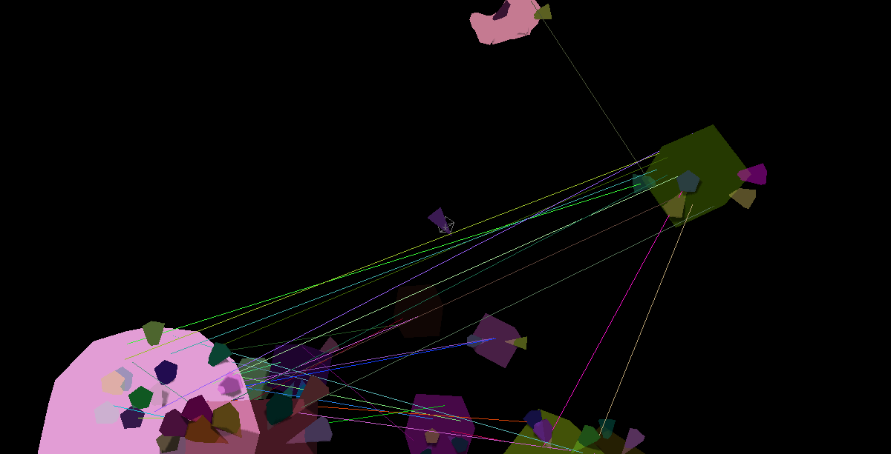
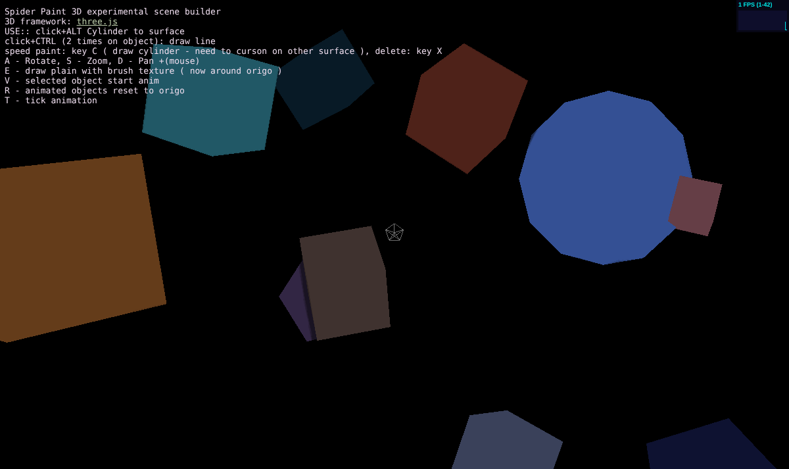

Model in place
Aim the cross at a surface: M places or shoots a prism, V strings a spider bar between two points, X deletes, U undoes.
THE WORKSHOP · BUILT ON 3DRAFT
A first-person world builder for everyone. Model right where you stand, walk into what you made, then drive it, fly it or turn it into a game — and invite an AI to build with you.

FOR THE COMMUNITY
Most 3D tools put one object in the middle and orbit around it. Spider Paint puts you inside the scene: any object can become the centre of attention, and the same world serves for modelling, walking, driving and space flight.
Aim the cross at a surface: M places or shoots a prism, V strings a spider bar between two points, X deletes, U undoes.
T locks onto an object and orbits it; W A S D R F fly in speed steps; Enter finds anything by name — a chair or Andromeda.
Q edit mode draws lines on a surface and cuts faces exactly where you drew. O booleans: union, subtract, intersect.
P opens twelve materials with metal, rough, alpha, soft and emit sliders. A face can also show an image, a web page or another 3Draft scene.
BUILD WITH AN AI
Spider Paint carries an MCP server. An AI builds models with real tools, looks at its own renders, and can steer the viewer you have open. The public endpoint needs no install and no sign-in.
In Claude, ChatGPT or Gemini, create a custom connector with this URL and no authentication:
https://spider-paint.vercel.app/api/mcpDescribe a model in plain words. The agent calls build_model and returns an editable scene with a link that opens it in Spider Paint.
Click AI live in the + scene toolbar and paste the private session code to the agent. It can then read your scene and render, and — only if you tick “Allow AI edits” — edit it with you, in the same browser.
Stop sharing revokes access and deletes the snapshot. Inactive sessions expire after two hours.
STORIES & REPLAYS
A .build.json keeps every step of a model, with separate camera and caption tracks. Spider Paint turns into a player: play, step, scrub.
The shuttle an AI built through MCP, step by step — with cutaway inspection and reversible steps.
A silent 72-second story beside a deep-sky black hole, with cinematic cameras.
ROOTS · 2015 → 2026
Spider Paint began in 2015 as a light WebGL experiment on Three.js: objects scattered in space and the threads between them. The original is kept untouched in its own branch, and it still runs. Today the same idea lives on the 3Draft engine — and is installable as an app on a phone.
